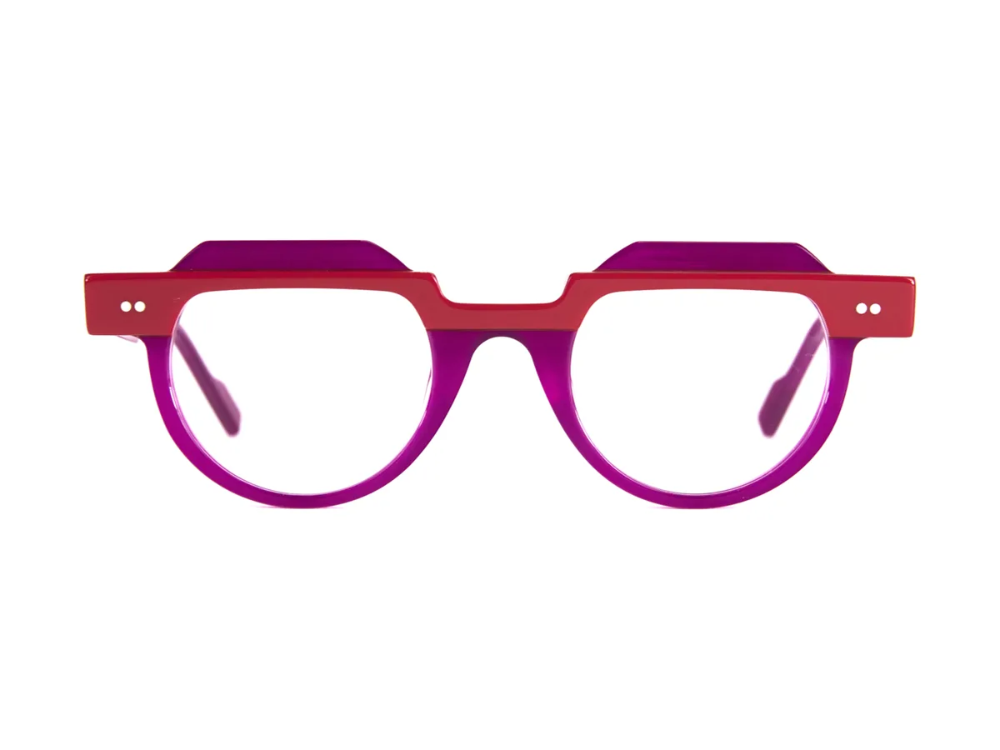

#Nuevo
#Nuevo
Anne et Valentin

Sehtests durch diplomierte Optometristen und Brillen der besten Häuser, im Zentrum von Moraira.
Augengesundheit
Wir sind eine zugelassene optische Gesundheitseinrichtung. Bevor wir über Fassungen sprechen, stellen wir sicher, dass Sie gut sehen und Ihre Augen gesund sind. Den Sehtest führt ein diplomierter Optometrist durch.
Erster Sehtest mit etwa 3 Jahren, danach einmal jährlich im Schulalter. Viele Sehprobleme zeigen sich zuerst als Schwierigkeiten in der Schule.
Alle 1 bis 2 Jahre. Wer viele Stunden am Computer oder Handy verbringt, sollte auch Sehermüdung und trockene Augen prüfen lassen.
Einmal jährlich. Die Alterssichtigkeit (Presbyopie) setzt ein, und die Augengesundheit sollte häufiger kontrolliert werden.
Lassen Sie sich vor der Führerscheinverlängerung prüfen und immer, wenn Sie nachts schlechter sehen oder geblendet werden.
In der Nähe sehen Sie gut, in der Ferne verschwommen: Tafel, Schilder, Nummernschilder. Sie tritt meist in der Kindheit oder Jugend auf und nimmt in den Wachstumsjahren zu.
Unsere Lösung Brille oder Kontaktlinsen. Bei Kindern Myopie-Management-Gläser, die das Fortschreiten bremsen.
Das Scharfstellen in der Nähe fällt schwer, bei starker Ausprägung auch in der Ferne. Sie verursacht Ermüdung und Kopfschmerzen beim Lesen. Bei Kindern bleibt sie oft unbemerkt, weil das Auge sie mit Anstrengung ausgleicht.
Unsere Lösung Brille oder Kontaktlinsen, die das Auge entlasten, vor allem beim Lesen und Lernen.
Die Hornhaut ist nicht ganz rund, das Bild erscheint in jeder Entfernung verzerrt oder leicht doppelt. Nachts sieht man häufig Lichthöfe um Lampen.
Unsere Lösung Torische Gläser, als Brille und auch als Kontaktlinse.
Ab etwa 40 bis 45 Jahren verliert die Augenlinse an Flexibilität, und man muss Handy oder Buch zum Lesen weiter weghalten. Ein natürlicher Prozess, der uns alle trifft.
Unsere Lösung Lesebrille, Gleitsichtgläser oder multifokale Kontaktlinsen, je nach Ihrem Alltag.
Jucken, Sandkorngefühl, rote Augen oder sogar Tränen. Bildschirme, Klimaanlage, Wind und langes Tragen von Kontaktlinsen verschlimmern es.
Unsere Lösung Wir beurteilen Ihren Tränenfilm, empfehlen künstliche Tränen und Gewohnheiten und überweisen Sie bei Bedarf zum Augenarzt.
Verschwommenes Sehen am Ende des Tages, müde Augen und Kopfschmerzen nach vielen Stunden am Computer oder Handy. Vor einem Bildschirm blinzeln wir bis zu dreimal seltener.
Unsere Lösung Auf Ihren Arbeitsabstand abgestimmte Gläser, Arbeitsplatzbrillen und die 20-20-20-Regel.
In unserem Ratgeber Augengesundheit (auf Spanisch) erklären wir ohne Fachjargon, was Sie wissen sollten über:
Ratgeber Augengesundheit lesenDiese Informationen dienen der Orientierung und ersetzen keinen Sehtest. Bei Fragen vereinbaren Sie einen Termin bei unseren Optometristen.
Was Sie online nicht finden
Vollständige Brillenwertbestimmung und Kontrolle Ihrer Augengesundheit, mit moderner Technik und ohne Eile. Der Sehtest ist kostenlos und unverbindlich. Mehr zum kostenlosen Sehtest.
Schnelle, schmerzfreie Messung des Augeninnendrucks. Die wichtigste Untersuchung zur Früherkennung des Glaukoms, besonders ab 40.
Digitale Aufnahme des Augenhintergrunds zur Beurteilung von Netzhaut, Makula und Sehnerv und zum Vergleich bei jedem Sehtest.
Korrigierende, multifokale, farbige und Fun-Kontaktlinsen sowie Anpassung formstabiler, gasdurchlässiger Kontaktlinsen.
Präzise Vermessung und begleitete Eingewöhnung für gutes Sehen in der Nähe, im Zwischenbereich und in der Ferne.
Kindgerechte Sehtests sowie robuste, bequeme und sichere Fassungen.
Lösungen gegen digitale Augenermüdung: Arbeitsplatzbrillen und Tipps zur Sehhygiene.
Wir richten, reinigen und reparieren Ihre Brille sofort, auch wenn Sie im Urlaub sind.
Gesundheitsfachkräfte
Optometrist/in
Kammernummer: [ausstehend]

Senti2 kennenlernen
In der Calle Marjaleta, mitten im Zentrum von Moraira, ist Senti2 bewusst ein kleiner Optiker: Wir nehmen uns Zeit, hören zu, was Sie brauchen, und sind auch nach dem Kauf für Sie da.
Wir wählen jede Fassung einzeln aus, von den großen Häusern wie Cartier, Chopard oder Dita bis zu unabhängigen Designern wie Face à Face, Anne et Valentin oder Pementa.
Calle Marjaleta, 3 · Moraira
Probieren Sie Fassungen in Ruhe an: Vitrinen der großen Häuser, ganze Wände voller Korrektions- und Sonnenbrillen und ein komplett ausgestatteter Optometrie-Raum.


Neu in Moraira eingetroffen
#Nuevo
Anne et Valentin
 #Nuevo
#Nuevo
Dita
 #Top
#Top
Dita
 #Nuevo
#Nuevo
Face à Face
 #Nuevo
#Nuevo
Pementa
 #Nuevo
#Nuevo
Pementa

#NuevoPementa
 #Top
#Top
Anne et Valentin
 #Nuevo
#Nuevo
L.A. Eyeworks
 #Nuevo
#Nuevo
Dita
 #Top
#Top
Face à Face
 #Nuevo
#Nuevo
Pementa
Google-Bewertungen
4,8 12 Bewertungen auf Google
★★★★★
Óptica muy recomendable en Moraira, tiene gafas de diseño muy bonitas y el servicio es buenísimo. La chica es muy maja y eficiente.
★★★★★
Had a great experience today with the guys at Senti2. Very relaxed and friendly atmosphere and caring attitudes. Would highly recommend.
★★★★★
Ik werd uiterst vriendelijk ontvangen en zeer professioneel geholpen, hoewel ik (als toerist) geen gekende klant ben. Dankjewel!
Häufige Fragen
Erwachsene in der Regel alle 1 bis 2 Jahre, ab 40 einmal jährlich. Bei Veränderungen des Sehens, Kopfschmerzen oder müden Augen nicht warten: früher einen Termin vereinbaren.
Nichts: Der Sehtest ist kostenlos und unverbindlich. Er umfasst die Brillenwertbestimmung, die Tonometrie und die Netzhautfotografie. Wir bitten nur um einen Termin, damit wir uns die nötige Zeit nehmen können.
Wir empfehlen einen ersten Sehtest mit etwa 3 Jahren und im Schulalter einmal jährlich. Kinder sagen selten, dass sie schlecht sehen: Eltern oder Lehrer bemerken es.
Ein diplomierter, eingetragener Optometrist. Stellen wir etwas fest, das ärztliche Behandlung erfordert, überweisen wir Sie zum Augenarzt.
Ja. Der Sehtest umfasst Tonometrie, die Messung des Augeninnendrucks, und Retinografie, eine digitale Aufnahme des Augenhintergrunds, mit der wir Netzhaut und Sehnerv beurteilen und Veränderungen von Termin zu Termin verfolgen.
In der Calle Marjaleta 3, 03724 Moraira (Alicante), im Ortszentrum. Anfahrt ansehen.
Montag bis Freitag von 10:00 bis 19:00 Uhr und samstags von 10:00 bis 14:00 Uhr. Sonn- und feiertags geschlossen.
Luxusmarken wie Cartier, Chopard, Dior, Gucci, Porsche Design, Dita oder Saint Laurent und unabhängige Designer wie Face à Face, Anne et Valentin oder Pementa. Alle finden Sie im Markenkarussell.
Der natürliche Verlust der Fähigkeit, in der Nähe scharf zu sehen, der ab etwa 40 bis 45 Jahren auftritt. Korrigiert wird sie mit Lesebrille, Gleitsichtgläsern oder multifokalen Kontaktlinsen. Mehr dazu in unserem Ratgeber Augengesundheit (auf Spanisch).
Sie schaden nicht, aber sie ermüden: Vor einem Bildschirm blinzeln wir weniger und strengen die Naheinstellung stundenlang an. Machen Sie Pausen nach der 20-20-20-Regel, achten Sie auf gutes Licht und prüfen Sie Ihre Brillenwerte; bei vielen Stunden am Computer kann eine Arbeitsplatzbrille helfen. Mehr Tipps in unserem Ratgeber Augengesundheit (auf Spanisch).
Rufen Sie uns an unter 966 49 04 40, schreiben Sie an senti2moraira@gmail.com oder kommen Sie im Geschäft vorbei.
Terminvereinbarung
Sehtests und Kontaktlinsenanpassungen erfolgen nach Terminvereinbarung, damit wir uns die Zeit nehmen können, die Sie brauchen.
966 49 04 40
Montag bis Freitag 10 bis 19 Uhr · Samstag 10 bis 14 UhrAntwort während der Öffnungszeiten
Ideal für kurze Fragen und zur Terminbestätigungsenti2moraira@gmail.com
Wir antworten so schnell wie möglichSie können auch ohne Termin vorbeikommen: Calle Marjaleta 3, Moraira · Öffnungszeiten werden geprüft…
Sagen Sie uns, was Sie brauchen, und wir melden uns so schnell wie möglich.